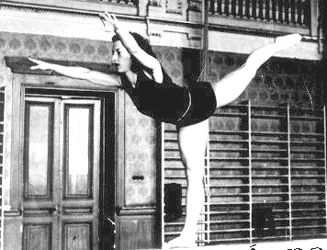

Agnes Keleti (HUN)
1952 Olympic FX Gold Medalist
1954 World UB Champion
1956 Olympic UB, B and FX Gold Medalist

Medal Total
Olympic Games: 4
Gold, 3 Silver, 1 Bronze
World Championships: 1 Gold, 1 Silver, 1 Bronze
Agnes was born on January 9, 1921, in Budapest, and died there on January 2, 2025.
Competition Results
1940
Hungarian Divisional Championships: 2nd AA, 1st Free Exercises, 2nd Clubs, 4th FX
1941
Budapest Championships: 1st AA
1947
Hungarian Championships: 1st AA
1948
Hungarian Championships: 1st AA
Pecs-Budapest-Debrecen Invitational: 1st AA, 1st B, 1st FX
1949
Hungarian Championships: 1st AA
World College Summer Games: 2nd Team, 1st AA, 1st UB, 1st B, 1st FX, 3rd V
1950
Hungarian Championships: 1st AA
USSR-HUN Dual Meet: 2nd Team, 2nd AA, 1st B, 2nd RG, 3rd FX, 6th V
1951
GDR-HUN Dual Meet: 1st Team, 1st AA, 1st BB, 1st FX, 2nd UB, 7th VT
Hungarian Championships: 1st AA
HUN-BUL Dual Meet: 1st Team, 1st AA
1952
Hungarian Championships: 1st AA
Olympic Games: 2nd Team, 6th AA, 1st FX, 3rd UB,
4th B
USSR-HUN Dual Meet: 2nd Team, 12th AA
1953
Hungarian Championships: 1st AA
1954
Hungarian Championships: 1st AA
Liberation Day International: 1st AA
World Championships: 2nd Team, 80th AA, 1st UB, 3rd B,
4th FX
1955
HUN-FRA Dual Meet: 1st Team, 1st AA
1956
Liberation Day International: 3rd AA, 1st UB, 1st B, 2nd FX
Olympic Games: 2nd Team, 2nd AA, 1st UB, 1st B,
1st FX
This page was created on September
11, 2005 and was last updated on February 14, 2026.
© Gymn Forum